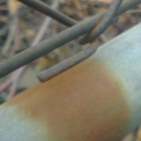

雨が上空から足下へと
――天空から大地へと物理（もののことわり）法則によって落下する。
金網の部分が酸性雨と反応して錆びる。
モノとモノが化学的に反応して分子の形（KATACHI）が変化する。
形が変わるコトによって、色や硬さや味が変わる。
モノが
――化ける。
錆びた鉄粉が水と一緒に
流体となって網を蔦（つた）ってジグザグに流される。
（標準的には”蔦”ではなく”伝”を使用するのが正しいとされる。）
そうして縞模様が出来るのだろう。
特に不思議なコトではない。